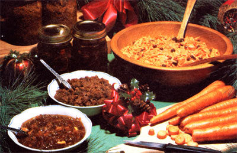

Not all of us have enough artistic and shop skills (or money) to allow us to give our friends hand-tooled leather belts, macraméd wall hangings, hammered silver bracelets, knitted sweaters, wooden toys, or other "I made it myself" gifts this Christmas. But anyone who can cook can whip up a "24 carrot" present or two for most of the special folks on his or her gift list.
Mix together one cup of grated raw carrot, one cup of grated raw potato, one fresh egg (optional), one cup of ground or grated suet, one cup of liquid honey, one cup of washed raisins (optional), one teaspoon of salt, one teaspoon of baking soda, one teaspoon of cloves and/or nutmeg, and one-half cup of bread flour. Continue mixing all these ingredients together until they form a spoonable dough (if it's not soft enough, add a bit of fruit juice or water . . . if it's too soft, stir in a little more flour).
Next, grease the inside of several recycled jam jars or tins and fill the containers three quarters full of the pudding (you must leave room for expansion, so the jars won't burst). Close the containers very tightly, set them on a piece of wire mesh or a wire rack in a large kettle, and add enough water to cover their lower halves. The kettle then should be placed on a large burner or the hottest spot on your cookstove.
Bring the pot to a boil, cover, and keep it boiling for two hours (as its vapor steams out, add more boiling water). The jars and/or tins of steamed pudding may be carefully lifted out and set aside to cool at the end of the two hours. When the containers have cooled, wash their outsides with hot, soapy water . . . cover them with fancy paper (tied with colorful scraps of yarn)... and store the little puddings until you're ready to give them to friends and relatives. CARROTJAM Combine six cups of grated raw carrot, six cups of liquid honey, three lemons (juice and rind), and a teaspoon and a half of mixed cinnamon and nutmeg in a large saucepan. Stir the mixture constantly as you bring it to a boil over medium heat, and continue stirring the jam while it "rolls" for approximately one hour. The cooked spread is then poured into sterilized recycled jars and-once it has cooled-the containers are capped, washed dressed up in foil or colored paper, and tied with yarn.
And when you're invited at the last minute to a potluck holiday supper, or you just want something "special, but quick" to take to a neighbor's house . . . try this one:
Put eight to ten carrots (depending on their size) through the coarse blade of your food chopper or "slice 'em fine" with an ordinary kitchen grater (and if you expect to serve a lot of people, keep on chopping or grating until you've filled a good sized salad bowl and scale the other ingredients up to match). Then
stir in one-half cup of commercially prepared mayonnaise or one-half cup of yogurt or sour cream that you've mixed together with two tablespoons of liquid honey and one teaspoon of white vinegar (use more or less vinegar to suit your taste). If you like you may also add a handful of washed raisins for an extra taste treat.
These recipes were used by my mother in the 20's (when we lived on a homestead in Canada's province of Alberta), and 1 think they're just as good now as they were then. Give them a try . . . and see what you think of these oldtime "gifts from the kitchen".
MOTHER'S NOTE: One of my official recipe tester/tasters tried all three of these treats before this issue went to press and reports: [1] The pudding is, indeed, delicious. So tasty, in fact, that you're well advised to at least double the recipe (which only makes three pints). [2] The jam is tasty too . . . but this oldtime formulation makes a spread that is far chewier than today's sugar- and pectinlaced products. You've been warned. [3] The carrot salad rates a rave review without the raisins. And with them? Mercy! It's scrumptious!
|
 |
|
|